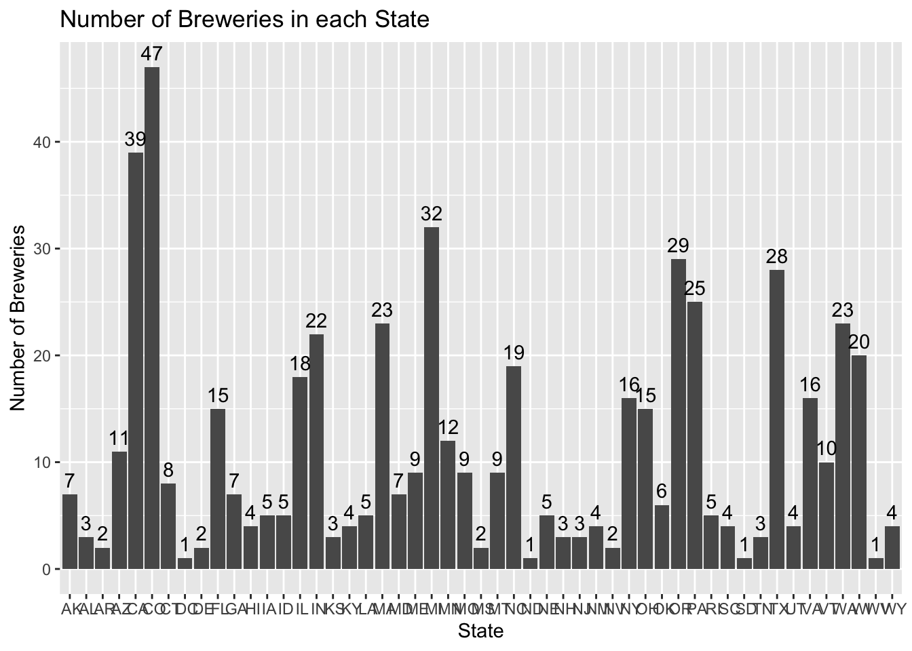
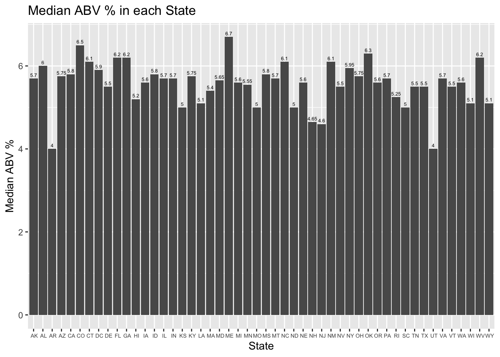
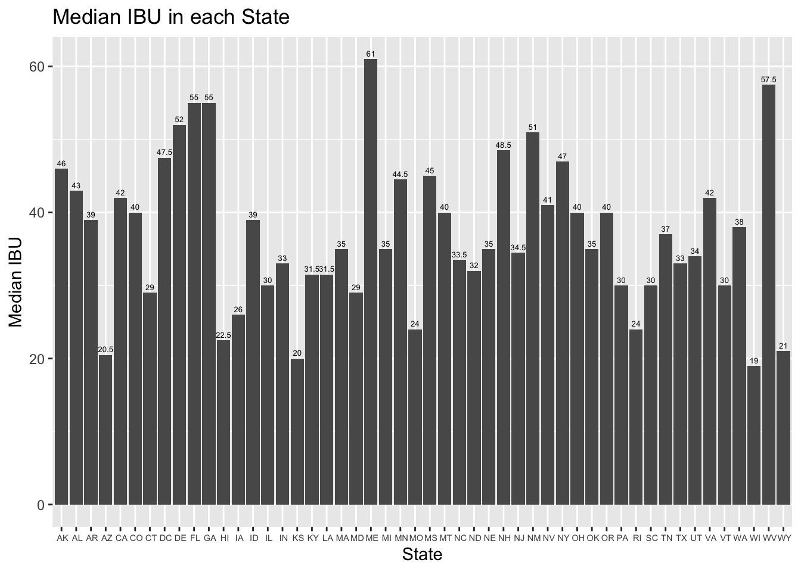
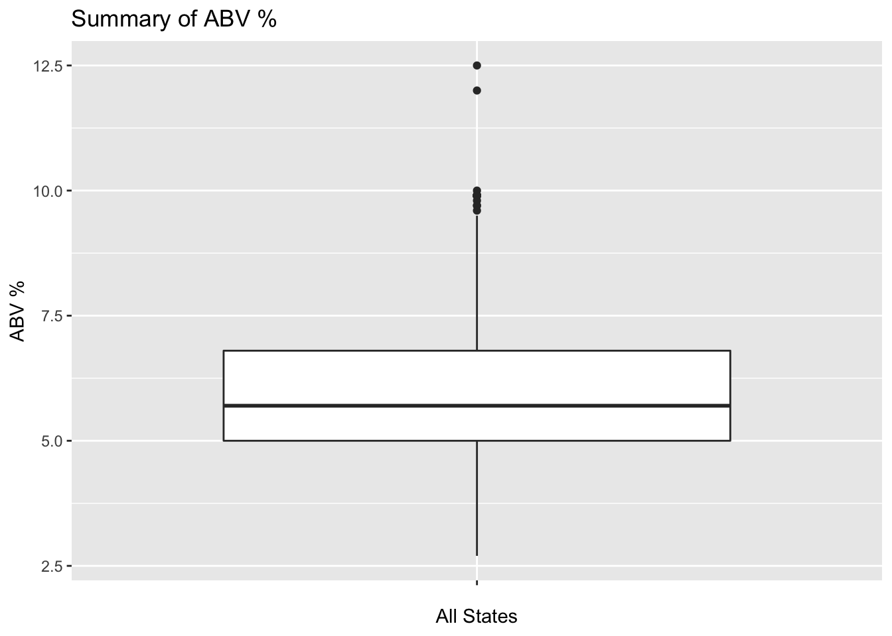
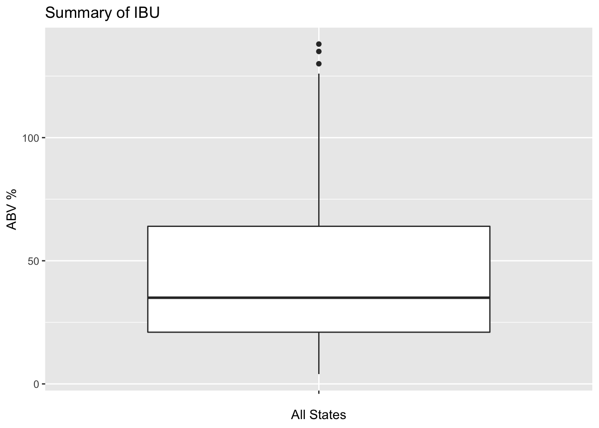
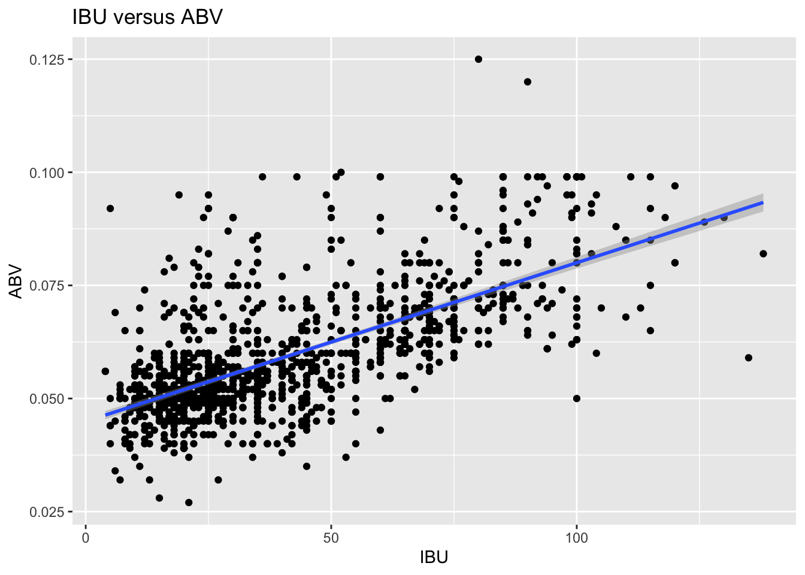
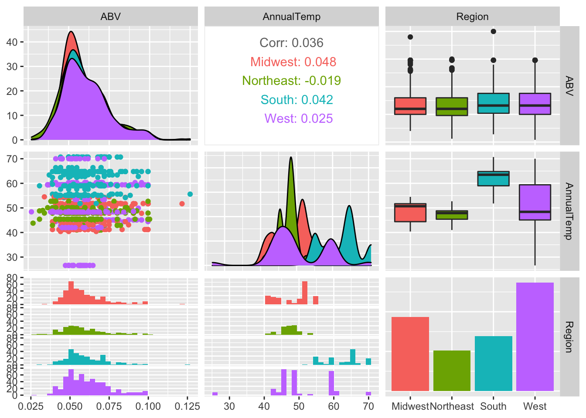
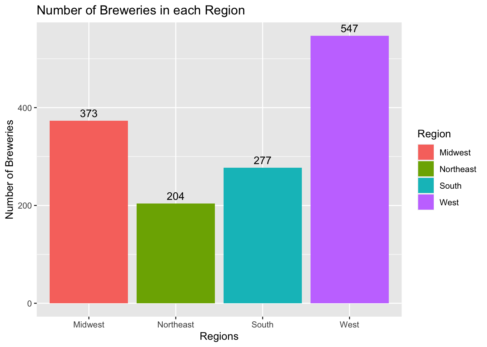

This is an R Markdown document. Markdown is a simple formatting syntax for authoring HTML, PDF, and MS Word documents. For more details on using R Markdown see http://rmarkdown.rstudio.com.
This RMarkdown is the analysis of the Breweries and Beers data sets, they contain Brewery ID, Brewery Name, City, State, Beer Name, Beer ID, ABV and IBU and Style of each beer, and its volume. This analysis will be comprehensive, covering most aspects of its descriptive statistics as well as a prediction algorithm. It will include answers to questions you might have, and will include visualizations to demonstrate major key points.
You can also embed plots, for example:
library(magrittr)
library(dplyr)##
## Attaching package: 'dplyr'## The following objects are masked from 'package:stats':
##
## filter, lag## The following objects are masked from 'package:base':
##
## intersect, setdiff, setequal, unionlibrary(tidyverse)## ── Attaching packages ───────────────────────────────────────────────────────── tidyverse 1.3.1 ──## ✓ ggplot2 3.3.3 ✓ purrr 0.3.4
## ✓ tibble 3.1.1 ✓ stringr 1.4.0
## ✓ tidyr 1.1.3 ✓ forcats 0.5.1
## ✓ readr 1.4.0## ── Conflicts ──────────────────────────────────────────────────────────── tidyverse_conflicts() ──
## x tidyr::extract() masks magrittr::extract()
## x dplyr::filter() masks stats::filter()
## x dplyr::lag() masks stats::lag()
## x purrr::set_names() masks magrittr::set_names()library(class)
library(data.table)## data.table 1.14.0 using 1 threads (see ?getDTthreads). Latest news: r-datatable.com## **********
## This installation of data.table has not detected OpenMP support. It should still work but in single-threaded mode.
## This is a Mac. Please read https://mac.r-project.org/openmp/. Please engage with Apple and ask them for support. Check r-datatable.com for updates, and our Mac instructions here: https://github.com/Rdatatable/data.table/wiki/Installation. After several years of many reports of installation problems on Mac, it's time to gingerly point out that there have been no similar problems on Windows or Linux.
## **********##
## Attaching package: 'data.table'## The following object is masked from 'package:purrr':
##
## transpose## The following objects are masked from 'package:dplyr':
##
## between, first, lastlibrary(caret)## Loading required package: lattice##
## Attaching package: 'caret'## The following object is masked from 'package:purrr':
##
## liftlibrary(ggplot2)
library(e1071)
library(GGally)## Registered S3 method overwritten by 'GGally':
## method from
## +.gg ggplot2Beers = read.csv("~/Desktop/MSDS/Github DDS/Unit 8 and 9 Case Study 1/Beers.csv")
Breweries = read.csv("~/Desktop/MSDS/Github DDS/Unit 8 and 9 Case Study 1/Breweries.csv")Question 1: How many breweries are present in each state?
Answer: After examining the summary statistics of each column in the breweries data set, I found that there are about 10 breweries per state, with a minimum of 1 and a maximum of 47 breweries in any given state. You may find a breakdown of each state and its brewery count below.
summary(Breweries$State)## Length Class Mode
## 558 character characterggplot(Breweries, aes(x = State)) + geom_bar() + xlab("State") +
ylab("Number of Breweries") + ggtitle("Number of Breweries in each State") +
geom_text(aes(label = ..count..), stat = "count", vjust = -0.5)
Question 2: Merge beer data with the breweries data. Print the first 6 observations and the last six observations to check the merged file.
Answer: After merging the beer data set and the breweries data set, I found that the first 6 observations consisted of, in order, Ukiah Brewing Company, 4 observations of the Butternuts Beer and Ale company, and the Sleeping Lady Brewing Company, respectively.
colnames(Breweries)[1] = c("Brewery_id")
Total <- merge(Breweries, Beers, by = "Brewery_id")
names(Total) = c("Brewery_id", "BreweryName", "City", "State", "BeerName", "Beer_ID", "ABV", "IBU", "Style", "Ounces")
head(Total)## Brewery_id BreweryName City State BeerName Beer_ID ABV IBU
## 1 1 NorthGate Brewing Minneapolis MN Pumpion 2689 0.060 38
## 2 1 NorthGate Brewing Minneapolis MN Stronghold 2688 0.060 25
## 3 1 NorthGate Brewing Minneapolis MN Parapet ESB 2687 0.056 47
## 4 1 NorthGate Brewing Minneapolis MN Get Together 2692 0.045 50
## 5 1 NorthGate Brewing Minneapolis MN Maggie's Leap 2691 0.049 26
## 6 1 NorthGate Brewing Minneapolis MN Wall's End 2690 0.048 19
## Style Ounces
## 1 Pumpkin Ale 16
## 2 American Porter 16
## 3 Extra Special / Strong Bitter (ESB) 16
## 4 American IPA 16
## 5 Milk / Sweet Stout 16
## 6 English Brown Ale 16tail(Total)## Brewery_id BreweryName City State BeerName
## 2405 556 Ukiah Brewing Company Ukiah CA Pilsner Ukiah
## 2406 557 Butternuts Beer and Ale Garrattsville NY Porkslap Pale Ale
## 2407 557 Butternuts Beer and Ale Garrattsville NY Snapperhead IPA
## 2408 557 Butternuts Beer and Ale Garrattsville NY Moo Thunder Stout
## 2409 557 Butternuts Beer and Ale Garrattsville NY Heinnieweisse Weissebier
## 2410 558 Sleeping Lady Brewing Company Anchorage AK Urban Wilderness Pale Ale
## Beer_ID ABV IBU Style Ounces
## 2405 98 0.055 NA German Pilsener 12
## 2406 49 0.043 NA American Pale Ale (APA) 12
## 2407 51 0.068 NA American IPA 12
## 2408 50 0.049 NA Milk / Sweet Stout 12
## 2409 52 0.049 NA Hefeweizen 12
## 2410 30 0.049 NA English Pale Ale 12Question 3: Address the missing values in each column.
Answer: By running a function which finds null values in the NewTotal data set, I found that the only columns to contain missing values were ABV and IBU. This could be a potential risk in any analysis using these features as it might lead to misleading, or unrepresentative, results. It would be wise to proceed with caution.
colSums(is.na(Total))## Brewery_id BreweryName City State BeerName Beer_ID ABV IBU
## 0 0 0 0 0 0 62 1005
## Style Ounces
## 0 0NewTotal <- na.omit(Total)Question 4: Compute the median alcohol content and international bitterness unit for each state. Plot a bar chart to compare.
Answer: After comparing the median alcohol content and international bitterness unit for each state, I found that there were a few states, ME, WV, and CA, with a much higher ABV; ME and WV had a considerably higher IBU than the rest of the states. Again, this analysis is conducted after imputing a considerable amount of missing values, so this finding could change as a result of including those values.
ABV <- data.frame(NewTotal %>% group_by(State) %>% summarise(Median_ABV = median(ABV)))
ggplot(ABV, aes(x = State, y = Median_ABV*100)) + geom_bar(stat = "identity") +
xlab("State") + ylab("Median ABV %") + ggtitle("Median ABV % in each State") +
geom_text(aes(label = Median_ABV*100), size=rel(1.75), vjust = -0.5) +
theme(axis.text.x = element_text(size = 5.5))
sum(ABV$Median_ABV / 50)## [1] 0.05564IBU <- data.frame(NewTotal %>% group_by(State) %>% summarise(Median_IBU = median(IBU)))
IBU## State Median_IBU
## 1 AK 46.0
## 2 AL 43.0
## 3 AR 39.0
## 4 AZ 20.5
## 5 CA 42.0
## 6 CO 40.0
## 7 CT 29.0
## 8 DC 47.5
## 9 DE 52.0
## 10 FL 55.0
## 11 GA 55.0
## 12 HI 22.5
## 13 IA 26.0
## 14 ID 39.0
## 15 IL 30.0
## 16 IN 33.0
## 17 KS 20.0
## 18 KY 31.5
## 19 LA 31.5
## 20 MA 35.0
## 21 MD 29.0
## 22 ME 61.0
## 23 MI 35.0
## 24 MN 44.5
## 25 MO 24.0
## 26 MS 45.0
## 27 MT 40.0
## 28 NC 33.5
## 29 ND 32.0
## 30 NE 35.0
## 31 NH 48.5
## 32 NJ 34.5
## 33 NM 51.0
## 34 NV 41.0
## 35 NY 47.0
## 36 OH 40.0
## 37 OK 35.0
## 38 OR 40.0
## 39 PA 30.0
## 40 RI 24.0
## 41 SC 30.0
## 42 TN 37.0
## 43 TX 33.0
## 44 UT 34.0
## 45 VA 42.0
## 46 VT 30.0
## 47 WA 38.0
## 48 WI 19.0
## 49 WV 57.5
## 50 WY 21.0ggplot(IBU, aes(x = State, y = Median_IBU)) + geom_bar(stat = "identity") +
xlab("State") + ylab("Median IBU") + ggtitle("Median IBU in each State") +
geom_text(aes(label = Median_IBU), size=rel(1.75), vjust = -0.5) +
theme(axis.text.x = element_text(size = 5.5))
sum(IBU$Median_IBU / 50)## [1] 36.98Question 5: Which state has the maximum alcoholic (ABV) beer? Which state has the most bitter (IBU) beer?
Answer: The state with the maximum alcoholic (ABV) beer is Kentucky, with an ABV value of 0.125. The state with the most bitter (IBU) beer is Oregon, with an IBU value of 138; this finding does not include missing values. So, after running the same code on the data set with no missing values. I found Colorado to have the highest ABV with a value of 0.128 and Oregon to again have the highest IBU value of 138.
NewTotal[which.max(NewTotal$ABV),]## Brewery_id BreweryName City State BeerName Beer_ID ABV IBU
## 9 2 Against the Grain Brewery Louisville KY London Balling 2685 0.125 80
## Style Ounces
## 9 English Barleywine 16Total[which.max(Total$ABV),]## Brewery_id BreweryName City State
## 384 52 Upslope Brewing Company Boulder CO
## BeerName Beer_ID ABV IBU Style
## 384 Lee Hill Series Vol. 5 - Belgian Style Quadrupel Ale 2565 0.128 NA Quadrupel (Quad)
## Ounces
## 384 19.2NewTotal[which.max(NewTotal$IBU),]## Brewery_id BreweryName City State BeerName Beer_ID ABV IBU
## 1857 375 Astoria Brewing Company Astoria OR Bitter Bitch Imperial IPA 980 0.082 138
## Style Ounces
## 1857 American Double / Imperial IPA 12Question 6: Comment on the summary statistics and distribution of the ABV variable.
Answer: Using the Total, the data set including missing values, I found ABV to have a minimum value of 0.001, a maximum value of 0.128, the first 25% of the data to have a value of 0.05, the first 50% of the data to have a value of 0.056, and the first 75% of the data to have a value of 0.067. The Total data are relatively equally distributed with only a few out-liers. Using the imputed data set, I found ABV to have a minimum value of 0.027, a maximum value of 0.125, the first 25% of the data to have a value of 0.05, the first 50% of the data to have a value of 0.057, and the first 75% of the data to have a value of 0.068. The data are slightly skewed to the right, meaning that the data are not equally distributed.
summary(NewTotal$ABV)## Min. 1st Qu. Median Mean 3rd Qu. Max.
## 0.02700 0.05000 0.05700 0.05991 0.06800 0.12500ggplot(NewTotal, aes(x = "", y = ABV * 100)) + geom_boxplot() + xlab("All States") +
ylab("ABV %") + ggtitle("Summary of ABV %")
ggplot(NewTotal, aes(x = "", y = IBU)) + geom_boxplot() + xlab("All States") +
ylab("ABV %") + ggtitle("Summary of IBU")
Question 7: Is there an apparent relationship between the bitterness of the beer and its alcoholic content? Draw a scatter plot. Make your best judgment of a relationship and EXPLAIN your answer.
Answer: After conducting a regression analysis on the potential relationship between the bitterness of the beer and its alcoholic content, there appears to be an association between the two variables. As we can see from the plot, as the bitterness of the beer increases the alcoholic content of the beer increases as well. After conducting a hypothesis test, we found that there seems to be a slight positive linear relationship between the bitterness of the beer and its alcoholic content. This relationship can only be inferred upon the ABV and IBU of the breweries included within the data, as any IBU below the minimum or maximum would be extrapolation, and therefore unrepresentative of the population of breweries and the ABV and IBU values of their beers.
ggplot(NewTotal, aes(x = IBU, y = ABV)) + geom_point() + geom_smooth(method = lm) +
xlab("IBU") + ylab("ABV") + ggtitle("IBU versus ABV ")## `geom_smooth()` using formula 'y ~ x'
cor(NewTotal$IBU, NewTotal$ABV, method = c("pearson"))## [1] 0.6706215Question 8: Budweiser would also like to investigate the difference with respect to IBU and ABV between IPAs (India Pale Ales) and other types of Ale (any beer with “Ale” in its name other than IPA). You decide to use KNN classification to investigate this relationship. Provide statistical evidence one way or the other. You can of course assume your audience is comfortable with percentages … KNN is very easy to understand conceptually.
Answer: Using KNN classifier, the model performed with an accuracy of 84%, a sensitivity of 87%, and a specificity of 80% to classify various beers as India Pale Ales or other types of Ale. We are 95% confident that any given value of IBU and ABV will be accurately predicted it as an India Pale Ale if it falls between the interval (0.80, 0.88). These statistics were found using a k value = 39.
IPA <- Total[Total$Style %like% "IPA", ]
IPA <- subset(IPA, select = c(IBU, ABV, Style))
IPA$Style = c("IPA")
Ale <- Total[Total$Style %like% "Ale", ]
Ale <- Ale[!grepl("IPA", Ale$Style), ]
Ale <- subset(Ale, select = c(IBU, ABV, Style))
Ale$Style = c("Ale")
TotalAle <- rbind(IPA, Ale)
# Factorize variable style
TotalAle$Style <- as.factor(TotalAle$Style)
str(TotalAle)## 'data.frame': 1534 obs. of 3 variables:
## $ IBU : int 50 68 65 68 85 100 100 42 NA NA ...
## $ ABV : num 0.045 0.08 0.06 0.076 0.075 0.08 0.08 0.063 0.097 0.077 ...
## $ Style: Factor w/ 2 levels "Ale","IPA": 2 2 2 2 2 2 2 2 2 2 ...TotalAle <- na.omit(TotalAle)
# Generate training index from 70% of total data set
set.seed(1)
splitPerc = 0.70
TrainIndices = sample(1:nrow(TotalAle), splitPerc * nrow(TotalAle))
TrainAle = TotalAle[TrainIndices,]
TestAle = TotalAle[-TrainIndices,]
# Standardize
PreValues <- preProcess(TrainAle, method = c("center", "scale"))
TrainAleC <- predict(PreValues, TrainAle)
TestAleC <- predict(PreValues, TestAle)
TrainAle <- TrainAleC[, -3]
TestAle <- TestAleC[, -3]
TrainAle1 <- TrainAleC[, 3, drop = TRUE]
TestAle1 <- TestAleC[, 3, drop = TRUE]
set.seed(1)
model <- knn(train = TrainAle, test = TestAle, cl = TrainAle1, k = 39)
confusionMatrix(TestAle1, model)## Confusion Matrix and Statistics
##
## Reference
## Prediction Ale IPA
## Ale 137 25
## IPA 20 102
##
## Accuracy : 0.8415
## 95% CI : (0.7938, 0.882)
## No Information Rate : 0.5528
## P-Value [Acc > NIR] : <2e-16
##
## Kappa : 0.6783
##
## Mcnemar's Test P-Value : 0.551
##
## Sensitivity : 0.8726
## Specificity : 0.8031
## Pos Pred Value : 0.8457
## Neg Pred Value : 0.8361
## Prevalence : 0.5528
## Detection Rate : 0.4824
## Detection Prevalence : 0.5704
## Balanced Accuracy : 0.8379
##
## 'Positive' Class : Ale
## Question 9: Knock their socks off! Find one other useful inference from the data that you feel Budweiser may be able to find value in. You must convince them why it is important and back up your conviction with appropriate statistical evidence.
Answer: Despite each region have a difference in annual temperature, with the Northeast having the lowest temperature of 48.55 and the South having the highest temperature of 62.27, the average ABV in each region were very similar. There was a small correlation though. The regions with the highest annual temperatures, the Midwest and the South, had slightly higher average ABV. Also, if we closely at the number of breweries in each region, the Northeast and the South have the lowest number of breweries. The regions with the smallest populations are in the Northeast and Midwest, which represent 17.1% and 20.8% of the population respectively. The regions with the largest populations are in the West and the South, which represent 23.9% and 38.3% of the population respectively. The Northeast has the smallest population and appears to have the least amount of land, so it makes sense that the region has the fewest number of breweries. However, the South has the largest population and appears to have a lot land. Maybe Budweiser should consider branching out more in the South?
# Organizing by Region
NewTotal2 <- NewTotal
NewTotal2$Region <- sapply(NewTotal2$State,
function(x) {if_else(x %in% c(" DE"," DC"," FL"," GA"," MD"," NC"," SC"," VA"," WV"," AL", " KY"," MS"," TN"," AR"," LA"," OK"," TX"),
"South",
if_else(x %in% c(" CT"," ME"," MA"," NH"," RI"," VT"," NJ"," NY"," PA"),
"Northeast",
if_else(x %in% c(" IN"," IL"," MI"," OH"," WI"," IA"," KS", " MN"," MO"," NE", " ND"," SD"),
"Midwest",
if_else(x %in% c(" AZ"," CO"," ID"," NM"," MT"," UT"," NV"," WY"," AK"," CA", " HI"," OR"," WA"),
"West",
"Not Found"))))
})
# Checking the data set
summary(NewTotal2)## Brewery_id BreweryName City State BeerName
## Min. : 1.0 Length:1405 Length:1405 Length:1405 Length:1405
## 1st Qu.: 95.0 Class :character Class :character Class :character Class :character
## Median :198.0 Mode :character Mode :character Mode :character Mode :character
## Mean :224.2
## 3rd Qu.:351.0
## Max. :547.0
## Beer_ID ABV IBU Style Ounces
## Min. : 1 Min. :0.02700 Min. : 4.00 Length:1405 Min. : 8.40
## 1st Qu.: 772 1st Qu.:0.05000 1st Qu.: 21.00 Class :character 1st Qu.:12.00
## Median :1439 Median :0.05700 Median : 35.00 Mode :character Median :12.00
## Mean :1415 Mean :0.05991 Mean : 42.71 Mean :13.51
## 3rd Qu.:2069 3rd Qu.:0.06800 3rd Qu.: 64.00 3rd Qu.:16.00
## Max. :2692 Max. :0.12500 Max. :138.00 Max. :32.00
## Region
## Length:1405
## Class :character
## Mode :character
##
##
## colSums(is.na(NewTotal2))## Brewery_id BreweryName City State BeerName Beer_ID ABV IBU
## 0 0 0 0 0 0 0 0
## Style Ounces Region
## 0 0 0# Data frame for annual temperatures in each state
Temperatures = data.frame(State = c(" AL", " AK", " AZ", " AR", " CA", " CO", " CT", " DE",
" FL", " GA", " HI", " ID", " IL", " IN",
" IA", " KS", " KY", " LA", " ME", " MD", " MA", " MI",
" MN", " MS", " MO", " MT", " NE", " NV", " NH", " NJ",
" NM", " NY", " NC", " ND", " OH", " OK", " OR",
" PA", " RI", " SC", " SD", " TN", " TX", " UT",
" VT", " VA", " WA", " WV", " WI", " WY"),
AnnualTemp = c(62.8, 26.6, 60.3, 60.4, 59.4, 45.1, 49.0, 55.3, 70.7, 63.5,
70.0, 44.4, 51.8, 51.7, 47.8, 54.3, 55.6, 66.4, 41.0,
54.2, 47.9, 44.4, 41.2, 63.4, 54.5, 42.7, 48.8, 49.9,
43.8, 52.7, 53.4, 45.4, 59.0, 40.4, 50.7, 59.6,
48.4, 48.8, 50.1, 62.4, 45.2, 57.6, 64.8, 48.6,
42.9, 55.1, 48.3, 51.8, 43.1, 42.0))
# Merge with the temperatures data frame
NewTotal2 <- merge(NewTotal2, Temperatures, by = "State")
# Comparing the number of breweries in each region with GGPairs
Compare = NewTotal2 %>% filter(Region == "South" | Region == "Northeast" |
Region == "Midwest" | Region == "West")
Compare %>% select(ABV, AnnualTemp, Region) %>% ggpairs(aes(color = Region))## `stat_bin()` using `bins = 30`. Pick better value with `binwidth`.
## `stat_bin()` using `bins = 30`. Pick better value with `binwidth`.
# Number of Breweries in each region
ggplot(NewTotal2, aes(x = Region, fill = Region)) + geom_bar() + xlab("Regions") +
ylab("Number of Breweries") + ggtitle("Number of Breweries in each Region") +
geom_text(aes(label = ..count..), stat = "count", vjust = -0.5)
# Average annual temperature in each region numerically
AnnualTemp2 <- data.frame(NewTotal2 %>% group_by(Region) %>% summarise(Mean_AnnualTemp = mean(AnnualTemp)))
AnnualTemp2## Region Mean_AnnualTemp
## 1 Midwest 48.54558
## 2 Northeast 47.28627
## 3 South 62.26715
## 4 West 50.35795# Average ABV in each region numerically
ABV2 <- data.frame(NewTotal2 %>% group_by(Region) %>% summarise(Mean_ABV = mean(ABV*100)))
ABV2## Region Mean_ABV
## 1 Midwest 5.912601
## 2 Northeast 5.859804
## 3 South 6.020578
## 4 West 6.075686Summary of Findings:
The data tell an interesting story. There are about 10 breweries per state, with various states being above and below the median IBU and ABV values for their IPAs and other Ales. Based on the data, the most untapped markets would be those with the lowest IBU and ABV values for both their IPAs and Ales. However, this data contained a significant number of missing values, values which would be important to include if further statistical analyses were conducted using the same features. There is, in fact, enough statistically significant evidence to suggest an association between the IBU and ABV of the beers mentioned within the data. A classifier would be an easy way to confidently predict if any given beer was an IPA or another type of Ale. It is up to the stakeholders to solidify this determination, but there seems to be potential market for IPAs with a low IBU and ABV value. Under this market, the conditions, assuming all factors held even, would be predictable based on previous Ale markets.
It is up to the stakeholders to solidify this determination, but there seems to be potential market for IPAs with a low IBU and ABV value. Under this market, the conditions, assuming all factors held even, would be predictable based on previous Ale markets.